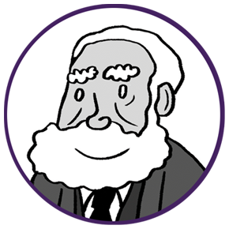
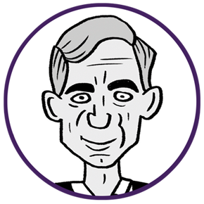
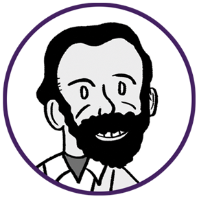
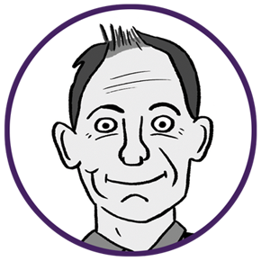

Alexander Graham Bell
Cet ingénieur canadien, renommé pour être le créateur du téléphone, a acquis sa notoriété en raison de son parcours singulier. Issu d'une famille de personnes sourdes, il a développé un vif intérêt pour les nuances de la parole. En explorant la création d'appareils auditifs exploitant les signaux sonores, il a jeté les bases de sa remarquable invention, marquant ainsi une avancée majeure dans la mécanisation. Ses travaux ont profondément influencé les pratiques sociales et ont servi de fondement à l'édification des réseaux de communication.
Bref, avec Alexander Graham Bell, on peut se téléphoner !

Claude Shannon
Cet ingénieur américain est reconnu comme le pionnier de la théorie de l'information. À la base de ses contributions majeures se trouve la conception d'un schéma définissant la communication entre deux machines, inspiré à la fois par des stratégies militaires et la simulation de la communication humaine. Il a également introduit le concept fondamental de l'unité de mesure de l'information numérique, connue sous le nom de bit. Son impact sur le domaine de l'informatique est considérable, avec plusieurs résultats notables portant son nom, notamment le concept d'entropie, qui évalue la quantité d'information transmise.

Vinton Cerf
Cet ingénieur américain est célèbre pour sa contribution majeure à la technologie de l'information, principalement la définition du protocole TCP/IP. Inspiré par le concept de datagramme proposé par le Français Louis Pouzin, ce protocole établit les règles pour contrôler l'échange d'informations à travers un réseau, marquant ainsi la fondation d'Internet. Initialement impliqué dans le projet Arpanet, le premier réseau de transmission de données par paquets, il s'est ensuite consacré à la création d'une architecture permettant la connexion entre différents réseaux..

Tim Berners-Lee
Cet ingénieur britannique est renommé pour avoir inventé le World Wide Web, ainsi que ses protocoles et langages associés tels que HTTP et HTML. Il est également à l'origine des URL, permettant une identification unique des sites. En tant que fondateur du W3C (World Wide Web Consortium), l'organisme de régulation du web, il a joué un rôle essentiel dans l'établissement de normes pour le développement du web. Par ailleurs, il a contribué au concept du web sémantique, qui vise à rendre le contenu interprétable par les machines grâce aux technologies sémantiques.
Pascale Vicat-Blanc
Cette informaticienne française est une spécialiste reconnue des réseaux à haut débit et des grilles de calcul. Sa recherche se concentre sur le défi de mettre en place une infrastructure capable de collecter et traiter une énorme quantité de données. Étant donné la difficulté, voire l'impossibilité, de configurer les réseaux de manière flexible, elle a opté pour la solution de la virtualisation. En tirant parti du cloud, le réseau peut s'ajuster en fonction de la taille du projet et de l'espace nécessaire. Cela implique également une organisation méticuleuse de cette activité virtuelle pour éviter toute perte de données.
Anne-Marie Kermarrec
Cette informaticienne française est une experte en informatique répartie et en systèmes pair à pair. Son domaine de recherche se concentre sur la conception de systèmes distribués décentralisés, particulièrement au sein de réseaux de grande envergure. L'un des domaines d'application majeurs de ses travaux concerne les recommandations, visant à offrir à chaque utilisateur des solutions toujours plus adaptées à leurs besoins.